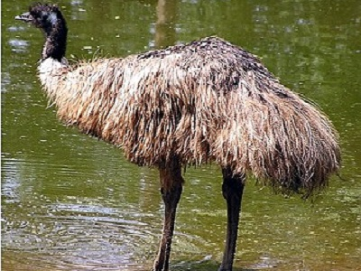

Futómadarak
A futómadarak olyan madarak, amelyek elvesztették repülőképességüket. Szárnyaik csökevényesek, erős lábaik viszont alkalmassá teszik őket a gyors futásra. Ide tartozik például a strucc, az emu és a nandú. Főként a déli féltekén élnek.
Wikipedia